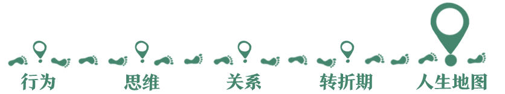
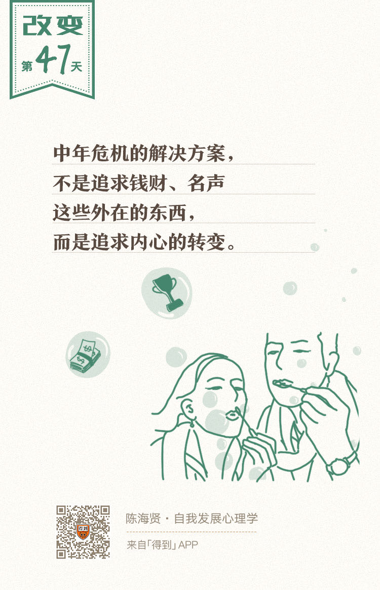

欢迎来到《自我发展心理学》。
你好，我是陈海贤。
如果顺利的话，你已经有了一个青春期建立起来的稳定的自我，有了成年早期获得的亲密关系和职业认同，自我的范围从一个人扩展到了两个人，再扩展到了工作关系中更多的人。
也许你平稳地过了好几年。你家庭稳定，工作也做得越来越好，你甚至会想，我是不是就这样度过余生了呢？
并不会，因为变化很快又来了。
你进入了人生的另一个动荡时期——中年期。这一讲，我们就来看看这个时期的课题和障碍。
中年期的使命：繁衍
中年期又叫成年中期，通常是指从35岁到60岁这一段很长的时期。对很多人来说，中年期是一个惊涛骇浪的时期。
和青春期一样，在这个时期，人们的身体重新开始变得陌生，只不过，这一次不是因为成熟，而是因为衰老。
和青春期一样，感情重新变成了一件麻烦的事情。
孩子进入了青春的叛逆期，父母开始生病甚至离世，而我们也不再满足于前一个阶段琐碎而日常的工作和生活，希望能够寻找到更深层的人生意义。
年轻时从来不觉得是问题的“时间”，在这个阶段开始变成了问题。人们开始意识到，原来生命有限，自己也会衰老和死亡。
害怕衰老，就是这个阶段的发展障碍。
当我们在害怕衰老的时候，我们究竟在害怕什么呢？
身体机能的衰退当然是一个方面。但最大的挑战，还是可能性的丧失。衰老和死亡的过程，其实就是把可能变成现实，把悬念变成答案的过程。
在中年的时候，你会意识到，生命中的可能性正在一点点消失。年轻时一些想做没做成的事，可能永远也做不成了，一些想在一起而没在一起的人，可能再也不会在一起了。
你会焦虑于这种确定性，并苦苦思索，除了可见的衰老和死亡，自己的未来到底在哪里？
很多年轻人说，自己从小镇来到大城市，或者从稳定的工作中辞职，就是害怕过那种“一眼能看到未来”的生活。可是到了中年以后，很多人的生活就真的一眼看到了未来。
在中年的时候，我们很容易把这种可能性的贫乏带来的恐慌，误解为是因为衰老引起的。所以，对于变老这件事，有些人就可能变得非常抗拒。
一些男人开始健身、寻求婚外情，想重新体验青春的激情，来维持自己没老的错觉。
女人则开始精心打扮自己，整容，害怕因为变老而失去魅力。
也有一些人开始回忆当年，对年轻人指手画脚，开始变得俗气、势利、斤斤计较，把生命的成长寄托在钱财、名声这些可见的东西的积累上。
他们并不知道，中年期危机的解决方案，并不是追求这些外在的东西，而是内心的转变。
但是，也有一些人，人到中年以后，反而开始渐入佳境。他变得更成熟、更有经验，也更有创造力。一些人开始摆脱了“小我”的限制。他们的人生境界也因此开阔起来。
这种变化是怎么发生的呢？
很重要的原因是，这些人到了中年，他们和世界、和他人的关系就发生了变化。别人既变得不重要了，也变得更重要了。
变得不重要了，是我们不再那么在意别人的看法和评价，相应的，也不再那么在意世俗意义上的规则和成功，我们会更多遵循自己的内心来做决定。
变得重要，是因为我们开始关心自我以外的他人，尤其是我们的下一代。我们开始从他人的成长中，获得新的可能性。
我们之前说过，从青春期开始的人生前半段，是收集的阶段。人生的后半段，就是分发的阶段了。
我们开始把前半生收集的东西分发出去，去关心自我以外的他人，关心我们的下一代。我们会从下一代的繁衍中获得人生意义，获得一种新的可能性。否则，我们的生命就很容易陷入停滞的状态。
所以，繁衍就是我们在中年期要完成的发展课题。这种繁衍，既发生在家庭的领域，也发生在工作和社会领域。
这一讲，我们着重讲讲家庭里的繁衍。
繁衍感的本质是奉献
家庭里的繁衍，有孩子的父母，自然会懂。
如果说，在成年早期，你的注意力主要还放到自己的事业上，到中年的某个阶段，你自然就会觉得，你自己的事情并不是那么重要。
如果孩子摔倒哭了，你就会心疼得恨不得是自己摔倒。如果孩子开心地笑了，你会比他还开心。
孩子在旁边时，你自然就会有一种特别的安心，觉得自己所做的一切，都是值得的。
孩子把我们从“小我”中拉了出来，自我的涵义，又一次扩大了。这次，它包括了下一代。而因为自我的扩大，自我的可能性危机，就变得不再是那么大的问题了。
可是，并不是所有有孩子的成人，都发展出了他们的繁衍感。
我们说，繁衍感的本质，是我们把自己奉献出去，让自己成为孩子的一部分。可是有些父母，并不是把自己奉献出去，相反，他们是把孩子拉进来，来加强他们自己，把孩子成为自己的一部分。
这是两种不同形式的爱。
前一种的爱，是奉献式的，而后一种的爱，是占有式的。
前一种爱，是从孩子的需要出发，承认孩子是一个独立的个体，并真正关心他们。而后一种爱是从自己的需要出发。他们关心的，仍然是关系中的自我。
只有前一种奉献式的爱，才会发展出繁衍感。否则，你会在和子女的纠缠中，陷入某种停滞。
举个例子。
我有一个朋友，他妈妈特别黏他，很喜欢给他做各种好吃的。看起来，他妈妈很关心他，可是这种关心背后，也有一种奇怪的冷漠。
有一次，他妈妈给他卤了鸡爪，让他过去尝尝，问他，味道怎么样？他说，有点硬，再卤5分钟应该会不错。
可是妈妈很不甘心，说还好吧。你再尝尝试试？他又尝了一下，说还是硬啊。妈妈就说，不会啊，你再尝一下。尝到第三遍的时候，他无奈地说，还行。
妈妈就得意地说，对吧。再试试感觉就对了。
你看，哪怕是感觉，他妈妈也不觉得他的感觉是对的，而觉得自己的感觉是对的，并一定要让儿子认同。
很多父母都是这样，总是喜欢给孩子加衣服、夹菜，如果儿子说不需要，他们就会生气，觉得是对他们的冒犯。
有时候，他们还会让孩子代替他们完成他们没有完成的愿望。
比如，他们自己从小学习不好，没有上一个好大学，就会希望将来孩子能够好好学习，补偿一下他们没有读好大学的遗憾。或者他们存在着跟单位同事的竞争，就很希望通过孩子，来挣回面子。
问题还不在于他们让孩子代替他们完成自己的梦想，而在于孩子不接受时，他们会怎么处理。
如果孩子能够接受，这当然是好事，它会变成家族延续的传统。就像很多医生，祖辈三代都是医生一样。
但是如果孩子不接受，而他们又更看重自己的需要，就会带来很大的冲突。
这些孩子在青春期，就很难发展出他们的身份认同了。因为发展身份认同需要整合父母的期待和自己的期待，而在他们身上，这两种期待是冲突的。
占有式的爱和青春期的自我中心很像。它都是过度关注自己，而忽略了别人的需要。只不过，中年期所关注的东西，从自我形象，变成了通过孩子来满足“我”的需要。
走出中年危机：奉献式的爱
那真正有繁衍感的关系是怎么样的呢？
其实就是真的能为孩子想，甚至为孩子忍受和牺牲。
在第三章讲关系的纠缠时，我曾经说过一个故事。一个孩子要去外面的世界闯荡了，他问妈妈，妈妈我走了你会孤单吗，没人安慰你怎么办呢？妈妈说，我会孤单，但我不想把我自己的困难，变成你不能出去闯荡的障碍。
我想，这个妈妈心里是孤单的，可是从某种意义上，她也是充实的。因为她知道，自己这么做是为了孩子，她会真心愿意为孩子奉献，并为孩子的成长骄傲，并在孩子的成长中，突破了自我的限制。
也许你会问：如果我一味地为孩子奉献，那不是失去自我了吗？我会不会变成那种把所有对生活的期待都放到孩子身上，没有自己生活的那种父母呢？
并不会。
首先，具有繁衍感的奉献，会尊重孩子的独立性，这其实也是尊重了自己的独立性。
其次，当你把目光从自己身上移开，去关心孩子的成长时，你的自我看起来削弱了，但同时也增强了。
你失去了一些自我关注，甚至失去了一些满足自己需要和欲望的机会。但同时，你获得了另一种品质，就叫关心。这种关心，会变成自我新的部分。
它的对象既可以是孩子，也可以是自己。也就是说，你其实是在通过爱孩子，学习怎么爱自己。
所以，在奉献自我的同时，你也在加强自我。这种奉献式的爱，就是我们克服中年期的发展障碍，走出中年危机的方式。
总结一下，今天这节课，我们谈了中年期。
这个时期的发展障碍是中年危机，也就是害怕因为衰老而失去可能性。这个时期的课题是繁衍，只有奉献式的爱，才能帮助我们走出中年危机。
当然，中年期的关心并不只是停留在家庭，也不局限于自己的孩子。它还会扩展到工作中，甚至更广泛的社会领域。
下节课，我们就来讲讲家庭以外的繁衍。
我们下节课见。
